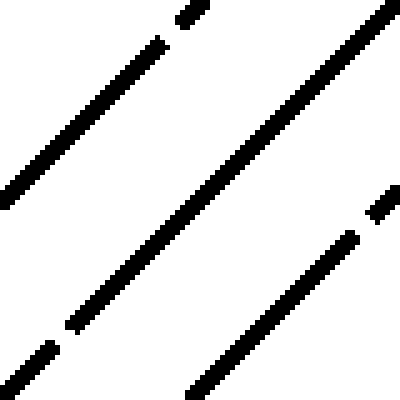
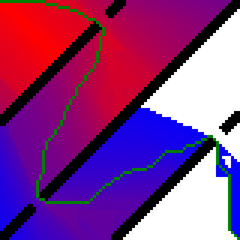
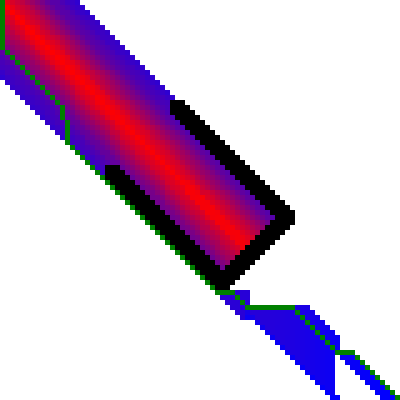

This is not a tutorial on how the A* graph search hueristic works; for a tutorial, see Amit’s A* Pages.
The implementation of A* graph search used in Pixel Champions for many years had been based off publicly available code samples from a developer who was formerly a member of the C# compiler team: Path Finding Using A* in C# 3.0. It consisted primarily of two data structures: a singly linked list that formed an "immutable stack" of nodes, and a sorted hash table of queues that functioned as a priority queue. Although simplistic to implement in C#, this design would construct up to 200,000 temporary objects per 100,000 nodes searched.
In Pixel Champions, the performance of A* graph search is a limiting factor on server capacity. The goal of having a large player capacity on low-cost hardware warranted designing a more efficient implementation. The implementation of A* graph search provided below significantly reduces the number of temporary objects by reusing containers and avoiding linked lists.
A* graph search requires a priority queue. In C#, unlike C++ or Java, a priority queue is not included in the standard libraries. The following is a minimalistic implementation of a priority queue that's based on Jim Mischel's Generic BinaryHeap Class.
public class PriorityQueue<T> where T : IComparable<T> { private List<T> items = new List<T>(); public int Count { get { return items.Count; } } public void Clear() { items.Clear(); } public void Insert(T item) { int i = items.Count; items.Add(item); while (i > 0 && items[(i - 1) / 2].CompareTo(item) > 0) { items[i] = items[(i - 1) / 2]; i = (i - 1) / 2; } items[i] = item; } public T Peek() { return items[0]; } public T RemoveRoot() { T firstItem = items[0]; T tempItem = items[items.Count - 1]; items.RemoveAt(items.Count - 1); if (items.Count > 0) { int i = 0; while (i < items.Count / 2) { int j = (2 * i) + 1; if ((j < items.Count - 1) && (items[j].CompareTo(items[j + 1]) > 0)) ++j; if (items[j].CompareTo(tempItem) >= 0) break; items[i] = items[j]; i = j; } items[i] = tempItem; } return firstItem; } }
The closed list of nodes is implemented as a hash table. Therefor, a node must be able to be split into a key-value pair in order to prevent storing the key twice in memory. To accomplish this, Node is predefined as a structure containing two components: TKey and TValue. It differs from the built-in type KeyValuePair<TKey,TValue> by implementing the interface IComparable<Node> so that nodes can be sorted by their TValue. The abstract method IsDestination should return true if the presense of node in the closed list completes the search. To determine a node's parent node, the data type used for TValue should include both cost and direction.
public abstract class AStar<TKey, TValue> where TValue : IComparable<TValue> { protected void Graph(Node start, PriorityQueue<Node> openList, Dictionary<TKey, TValue> closedList) { openList.Insert(start); while (openList.Count > 0) { Node node = openList.RemoveRoot(); if (closedList.ContainsKey(node.position)) continue; closedList.Add(node.position, node.cost); if (IsDestination(node.position)) return; AddNeighbours(node, openList); } } protected abstract void AddNeighbours(Node node, PriorityQueue<Node> openList); protected abstract bool IsDestination(TKey position); public struct Node : IComparable<Node> { public TKey position; public TValue cost; public Node(TKey position, TValue cost) { this.position = position; this.cost = cost; } public int CompareTo(Node other) { return cost.CompareTo(other.cost); } } }
The example application below attempts to find a path between the upper-left corner of a binary images to its bottom-right corner. If a path can be found, it plots the path (green) and closed list (red/blue) to a copy of the image.
|  |  |
|  |
In this example, TKey is defined as a Point, and TValue is defined as the custom structure below, named Cost. To allow for extraction of the path, the Cost structure in this example has both cost and direction. To keep this example code short, an index to the parent node is used rather than a direction. An index of -1 is used to indicate that a node has no parent.
public struct Cost : IComparable<Cost> { public readonly int parentIndex; public readonly int distanceTravelled; /*g(x)*/ public readonly int totalCost; /*f(x)*/ public Cost(int parentIndex, int distanceTravelled, int totalCost) { this.parentIndex = parentIndex; this.distanceTravelled = distanceTravelled; this.totalCost = totalCost; } public int CompareTo(Cost other) { return this.totalCost.CompareTo(other.totalCost); } }
Diagonal and orthogonal movements are given a cost of 7 and 5 respectively. This approximation yields sqrt(2) ≈ 1.4 = 7/5. Although Bitmap.GetPixel and Bitmap.SetPixel are notorious for their slowness (Bitmap.Lockbits should be used instead) they are used in this example to, once again, keep the code short.
public class BitmapSolver : AStar<Point, Cost> { private const int baseOrthogonalCost = 5; private const int baseDiagonalCost = 7; public Node? solution; private Bitmap bitmap; private Point destination; private Dictionary<Point, Cost> closedList; public void Graph(Bitmap bitmap, PriorityQueue<Node> openList, Dictionary<Point,Cost> closedList) { this.bitmap = bitmap; this.closedList = closedList; destination = new Point(bitmap.Width-1,bitmap.Height-1); Graph(new Node(Point.Empty, new Cost(-1, 0, GetDistance(Point.Empty, destination))), openList, closedList); } public int ToIndex(Point position) { return position.Y*bitmap.Width+position.X; } public Point ToPosition(int index) { return new Point(index % bitmap.Width, index / bitmap.Width); } protected override void AddNeighbours(Node node, PriorityQueue<Node> openList) { int parentIndex = ToIndex(node.position); for(int x=-1;x<=1;x++) for(int y=-1;y<=1;y++) if(!(x==0&&y==0)) { Point newPos = new Point(node.position.X + x, node.position.Y + y); if (newPos.X >= 0 && newPos.X < bitmap.Width && newPos.Y >= 0 && newPos.Y < bitmap.Height) { if (bitmap.GetPixel(newPos.X, newPos.Y).R != 0) { int distanceCost = node.cost.distanceTravelled + ((x == 0 || y == 0) ? baseOrthogonalCost : baseDiagonalCost); openList.Insert(new Node(newPos, new Cost(parentIndex, distanceCost, distanceCost + GetDistance(newPos, destination)))); } } } } private static int GetDistance(Point source, Point destination) { int dx = Math.Abs(destination.X - source.X); int dy = Math.Abs(destination.Y - source.Y); int diagonal = Math.Min(dx, dy); int orthogonal = dx + dy - 2 * diagonal; return diagonal * baseDiagonalCost + orthogonal * baseOrthogonalCost; } protected override bool IsDestination(Point position) { bool isSolved = position == destination; if (isSolved) solution = new Node(position, closedList[position]); return isSolved; } }
Each command line argument is interpreted as a path to an image to solve. For each image that can be solved, a numbered output image is created. Notice that openList and closedList have both been marked readonly; the two containers are cleared and reused rather than destroyed and reconstructed.
public class ConsoleMain { readonly PriorityQueue<AStar<Point, Cost>.Node> openList = new PriorityQueue<AStar<Point, Cost>.Node>(); readonly Dictionary<Point, Cost> closedList = new Dictionary<Point, Cost>(); static void Main(string[] args) { new ConsoleMain().Run(args); } public void Run(string[] files) { BitmapSolver bitmapSolver = new BitmapSolver(); for(int x=0;x<files.Length;x++) using(Bitmap bitmap = (Bitmap)Bitmap.FromFile(files[x])) { bitmapSolver.Graph(bitmap, openList, closedList); if (!bitmapSolver.solution.HasValue) continue; int itr=0; foreach(KeyValuePair<Point,Cost> pair in closedList) { Point pt = pair.Key; int val = (byte.MaxValue * (itr++)) / closedList.Count; bitmap.SetPixel(pt.X, pt.Y, Color.FromArgb(byte.MaxValue - val, 0, val)); } Point pos = bitmapSolver.solution.Value.position; Cost cost = bitmapSolver.solution.Value.cost; bitmap.SetPixel(pos.X, pos.Y, Color.Green); do { pos = bitmapSolver.ToPosition(cost.parentIndex); cost = closedList[pos]; bitmap.SetPixel(pos.X, pos.Y, Color.Green); } while (cost.parentIndex >= 0); bitmap.Save("Output" + (x + 1) + ".png"); bitmapSolver.solution = null; openList.Clear(); closedList.Clear(); } } }
This page was last modified on 19 March 2015.